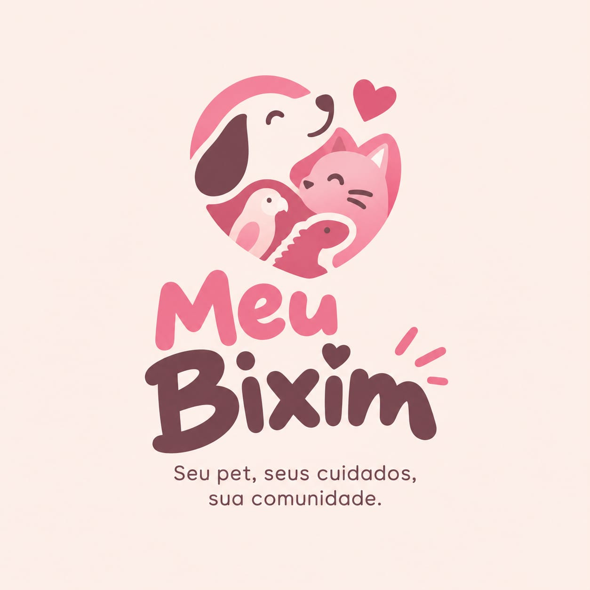

Cachorro
Disponível
Luna
Filhote dócil, muito carinhosa e ótima com crianças. Pronta para uma família amorosa.

Encontre pets esperando por um lar, ajude campanhas de resgate e conecte-se com famílias acolhedoras.
Filhote dócil, muito carinhosa e ótima com crianças. Pronta para uma família amorosa.
Gatinho tranquilo, muito brincalhão e adaptação rápida em apartamentos.
Animal em recuperação, muito sociável e em processo de adaptação para adoção.